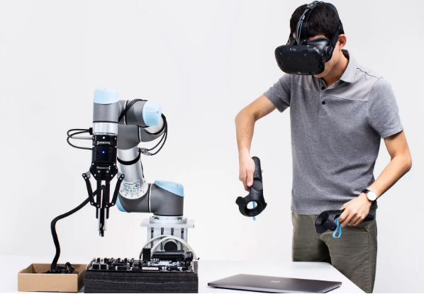
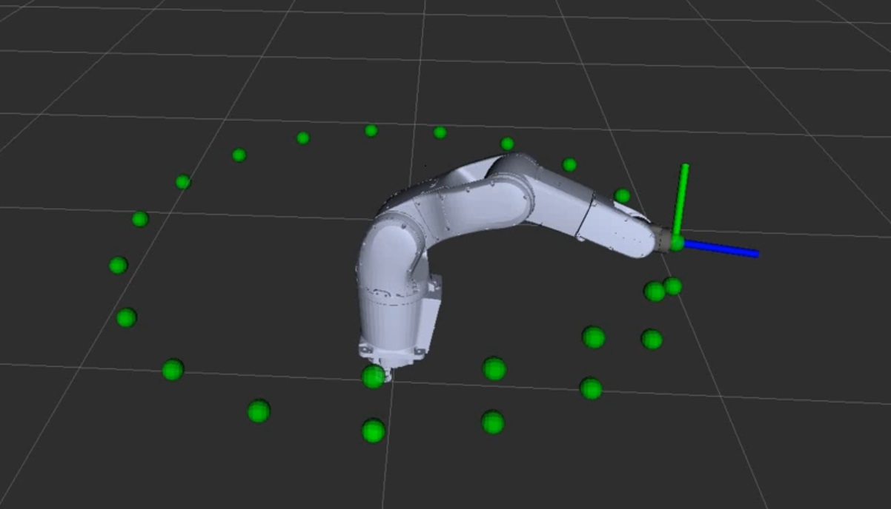

About Me
I am a Mechatronics and Control Engineer with hands-on experience in industrial automation, motion control systems, and advanced mechanical design. I specialize in developing real-world engineering solutions that integrate hardware, control systems, and software. My background includes experience in robotics, CAD modeling, embedded systems, and simulation tools such as ROS2 and Gazebo. I have worked on projects ranging from robotic systems and virtual simulation to industrial automation and control system implementation. I am passionate about building efficient, reliable, and scalable engineering systems, and I enjoy solving complex technical challenges that bridge design, control, and real-world deployment.
Experience
- Project Manager (Marie Curie Network) – FOURIER (2026–Present)
- Semiconductor Packaging Engineer (R&D) – Viatron Technologies (2024–2025)
- Graduate Research Associate – KAIST SRIM Lab (2022–2024)
- Assistant Manager Projects – ElectroCraft Engineering (2021-2022)
- Design Engineer – RapidTack UK (2020)
Education
- PhD Engineering – Polito (2026–present)
- MS Mechanical Engineering – KAIST (2022–2024)
- BSc Mechatronics – UET Lahore (2016–2020)
Projects

Telerobotics System
Developed a real-time telerobotics system for remote robotic operation and control. The project integrates robotic motion control, real-time communication, and simulation technologies for precise remote interaction.

ROS2 Robot Arm Simulation
Developed a robotic arm simulation using ROS2, URDF, RViz, and Gazebo for robotic motion analysis and visualization. Implemented robot state publishing, joint control, and simulation-based testing for robotic manipulation tasks.
Skills
- ROS2, Gazebo, MATLAB, SolidWorks, AutoCAD, Creo
- Programming: C, C++, Python, C#
- Hardware: Arduino, Raspberry Pi, Motion Controllers
Publications
- Wearable Haptics for Orthotropic Actuation – Advanced Materials (2025)
- Embodied Auxetic Intelligence – Advanced Functional Materials (2025)
- MXene-Based Artificial Muscle Systems – Advanced Engineering Materials (2024)